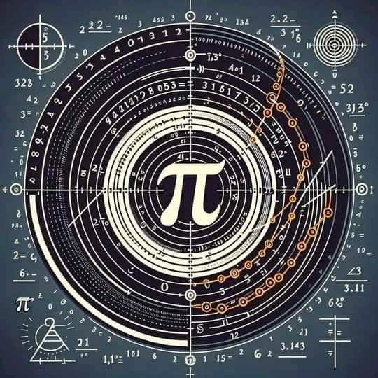
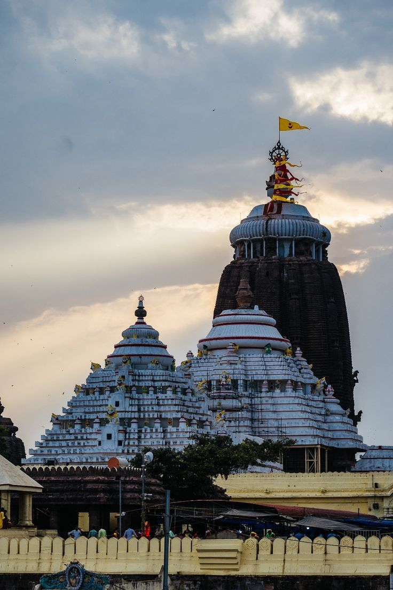
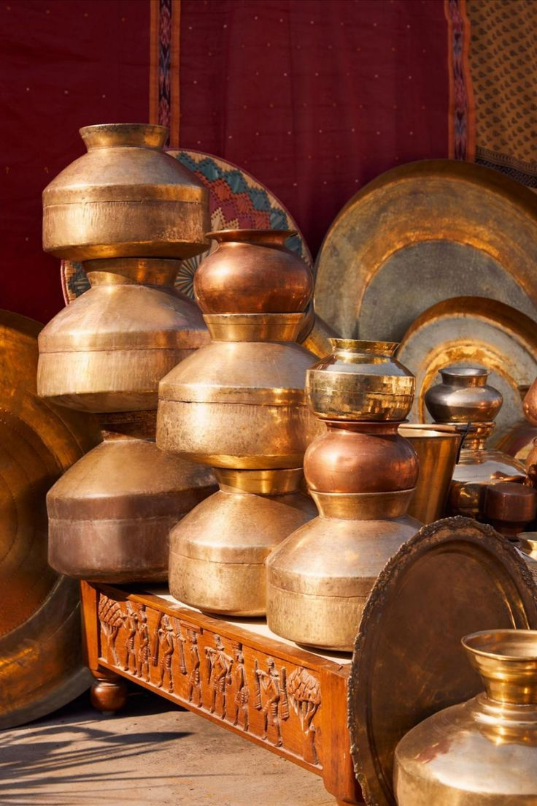

Ancient Indian Engineering & Technology
Discover India's remarkable advancements in science, technology, and architecture.

Iron Pillar of Delhi
A rust-resistant iron pillar over 1600 years old, showcasing advanced metallurgy.

Stepwells
Ingenious water storage systems built with geometric precision.
Ayurveda
Ancient medical science with holistic healing practices.

Vedic Mathematics
Ancient system of mathematics that simplified complex calculations.

Temple Architecture
Advanced construction methods used in temples like Brihadeeswarar.

Ancient Indian Metallurgy
Mastery in metalworking, including zinc extraction and gold coins.